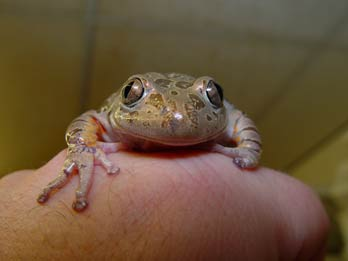

Reptielenzoo Iguana
|
stichting iguana |

Iguana is een opvangcentrum voor reptielen, amfibieën en geleedpotigen.
Door overheid en particulieren worden dieren aangebracht die in beslag zijn genomen of om welke reden dan ook niet meer gewenst zijn. Een deel van de aangebrachte dieren ziet u in onze tentoonstelling. Het zijn dieren die niet meer terug in de natuur kunnen, bijvoorbeeld omdat hun biotoop verwoest is of omdat ze gehandicapt zijn en een oog of een poot missen

Geschiedenis
Eind jaren zeventig/begin jaren tachtig werd er in Vlissingen begonnen met de opvang van afgedankte reptielen, amfibieën en ongewervelde dieren. Dit vond plaats in de woningen van twee gezinnen. Op een gegeven moment waren de woningen dusdanig volgebouwd met terraria, dat er voor de menselijke bewoners nog nauwelijks leefruimte was. Het aanbod van "asielzoekende" dieren leek eerder toe dan af te nemen., dus zicht op meer leefruimte voor de verzorgers kwam er vooralsnog niet. Er moest dus uitgekeken gaan worden naar een grotere ruimte. Ook moest de verzorging beter georganiseerd worden en moest er een oplossing gezocht worden voor de toenemende, hoge kosten. Aangezien het merendeel van de opgevangen dieren ziek of gewond was, werd er veel geld gespendeerd aan dierenartskosten en medicijnen. Om van verwarming, elektriciteit en voedsel nog maar niet te spreken. Dit alles leidde tot de oprichting van de Stichting Iguana in 1981.
De
doelstellingen van de Stichting Iguana waren (en zijn nog steeds):
* Het openen en instandhouden van de Reptielenzoo Iguana.
* Het beschermen van Reptielen, Amfibieën en Ongewervelde dieren.
* Het fungeren als opvangcentrum voor bovengenoemde dieren.
Op 19 mei 1982 was het dan eindelijk zover. De deuren van Reptielenzoo Iguana werden voor het eerst voor het publiek geopend. In eerste instantie waren de 300 m² ruimte waar we mee gestart waren voldoende. Nu, in het jaar 2000, wordt er gebruik gemaakt van 4000 m² ruimte. Uiteraard gebeurt er achter de schermen ook nog van alles, zoals voedselkweek, opslag, quarantaine, bibliotheek, personeelsvoorzieningen, etc. En natuurlijk hebben we altijd ruimte tekort. Bij de start werd de Reptielenzoo Iguana door 4 vrijwilligers draaiende gehouden. Naast een "gewone baan"werd er dag (en nacht) in de zoo gewerkt. Gelukkig kwamen er al snel wat vrijwilligers bij, want naast de verzorging van de dieren moest er al snel gewerkt gaan worden aan uitbreidingen. Ook nu, in het jaar 2002, werken er nog steeds vrijwilligers in en voor de Reptielenzoo Iguana. Momenteel zijn dat er maar liefst zo'n 25. En het mag gezegd: deze zijn onbetaalbaar en onmisbaar! Tevens zijn er nu ook 29 betaalde krachten in dienst, het zij fulltime, hetzij parttime.
Naast de enorme uitbreidingen in de Reptielenzoo, wat zowel de dieren als de bezoekers ten goede kwam, waren er ook op het gebied van de dierverzorging vele hoogtepunten , waaronder een aantal wereldprimeurs:
Een
(zeer) korte bloemlezing:
* De geboorte van jongen van de teju-soort, Tupinambis nigropunctatus,
een ca. één meter lange hagedis uit Zuid Amerika. Was nog nooit ergens
in gevangenschap gelukt.
* De regelmatige optredende geboortes van de bandvaraan, Varanus salvator,
een 2 tot 3 meter lang wordende hagedis uit Azië. Onder deze jongen zijn
ook volledig zwarte exemplaren.
* De succesvolle kweek met de groene leguaan, Iguana iguana. Inmiddels
heeft de zesde(!)generatie in gevangenschap geboren dieren het
levenslicht mogen aanschouwen. Tot op heden zijn er ca. 180 jonge groene
leguanen geboren in de zoo. Erbij vermeld moet worden dat de laatste jaren
slechts enkele eieren van elk legsel uitgebroed worden. Indien we alle
eieren uit zouden broeden, dan zouden we met een enorm geboorteoverschot
blijven zitten.
* Halverwege de jaren tachtig werden er maar liefst 89 jongen van de Steppevaraan
(Varanus exanthematicus) geboren.
* De schildpad Geochelone denticulata (Bosschildpad) heeft zich in de
zoo tot in de derde generatie voortgeplant.
* Een vrouwtje van de Indische Varaan (Varanus indicus) legde bevruchte
eieren, ondanks dat het 100% zeker is dat ze nog nooit een mannetje gezien
(of ontmoet) heeft. Uit zo'n ei werd een jong geboren (ook een vrouwtje)
en deze dame legt ook bevruchte eieren! Helaas is het nog niet gelukt
om ook deze met succes uit te broeden.
Uiteraard
is dit slechts een kleine greep uit alle successen met de voortplanting
van de in de reptielenzoo verzorgde dieren.
Een groot deel van de nakweekdieren is verhuisd naar andere dierentuinen
over de gehele wereld.